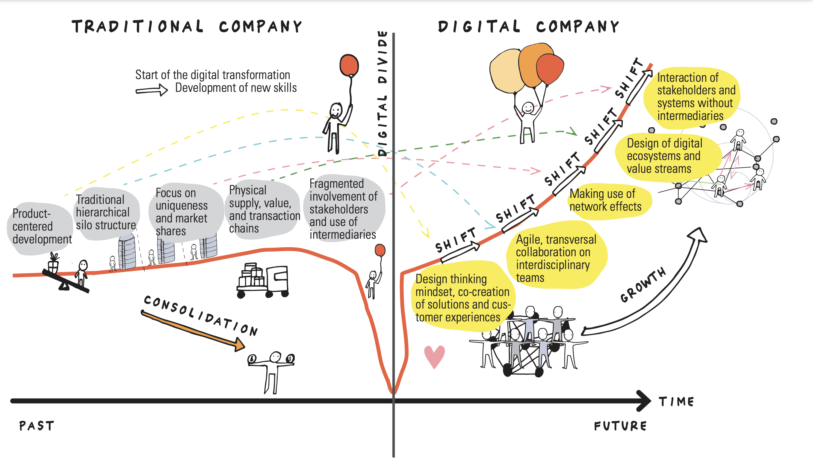

1 Doel
De HAN heeft in haar strategische koersbeeld expliciet de noodzaak benoemd voor meer volwassenheid op het gebied van digitalisering en technologie. Dit document beschrijft de betekenis van deze opdracht voor de voltijd-opleiding Bedrijfskunde (BK) en formuleert een aantal belangrijke beslispunten.
Het volgende hoofdstuk beschrijft de missie en visie van de HAN met betrekking tot het thema digitalisering en technologie. In hoofdstuk drie wordt het strategische doel die de HAN rondom digitalisering heeft geformuleerd, vertaald naar strategische beslisvragen voor de opleiding BK. Hoofdstuk vier bespreekt de belangrijkste vragen rondom het ontwerp van curriculum, didactiek en onderzoek. Tevens worden de benodigde faciliteiten en capaciteiten besproken die nodig zijn en de keuzes die hierin gemaakt kunnen worden.
2 Missie / Visie
Het werkveld heeft behoefte aan professionals die de kansen op het gebied van digitalisering en technologische transformaties van morgen mede kunnen vormgeven. En die ook de risico’s, bijvoorbeeld op het gebied van wet- en regelgeving of ethische dilemma’s, doorzien. Professionals – ook binnen de HAN – moeten daarom niet alleen vertrouwd zijn met wat er nu op digitaal en technologisch gebied voor handen is. Ze moeten ook nieuwsgierig zijn naar toekomstige ontwikkelingen en mogelijkheden zodat ze een bijdrage kunnen leveren aan het benutten van kansen.

Digitale Transformatie in Europa
Europa lijkt achter te lopen op zijn Amerikaanse en Chinese rivalen als het gaat om de digitale economie. Nepnieuws, onzeker werk en gegevensdiefstal zijn allemaal toegenomen onder de Amerikaanse digitale hegemonie, waar slechts een paar particuliere bedrijven de digitale wereld domineren (zie Figuur 1). Wat kunnen wij als Europeanen doen om de achterstand weer in te halen en hoe ver zijn we daarmee?

- Welke betekenis heeft de HAN Bedrijfskundige in een door digitalisering en technologie veranderende wereld?
3 Strategie
Eind 2027 beschikken studenten en medewerkers over vaardigheden om de kansen op het gebied van digitalisering en technologische transformaties mede te kunnen vormgeven. Tegelijkertijd doorzien zij ook de risico’s, bijvoorbeeld op het gebied van wet- en regelgeving of op het gebied van ethische dilemma’s.
- Welk volwassenheidsniveau moeten we qua digitalisering als HAN BK bereiken?
4 Ontwerp en uitvoering
Om kansen op het gebied van digitalisering te kunnen omzetten naar daadwerkelijk gerealiseerde waarde, dienen organisaties intern te beschikken over een aantal dynamische capaciteiten.

Deze capaciteiten kunnen worden verdeeld in drie categorieeën:
Sensing: het kunnen herkennen van kansen en bedreigingen
Seizing: kunnen acteren op kansen
Transforming: kansen kunnen omzetten naar waarde door aanpassing van het business model of door een bredere resource basis waaruit kan worden geput
Voor de optimale ontplooiing van bovenstaande capaciteiten dienen volgende elementen aanwezig te zijn: (a) cross functionele teams, (b) snelle besluitvorming en (c) management support. Faalfactoren zijn: (a) rigide strategische planningen, (b) lage veranderbereidheid en (c) hoge mate van hierarchie. Uiteindelijk zal de digitale transformatie leiden tot een strategische verandering in het business model, de interne en externe samenwerking en de organisatiecultuur (Warner en Wäger 2019).
Voorbeeld Uber
De casus beschrijft hoe Uber met behulp van data de kwaliteit van dienstverlening continue monitort, optimalisatiemogelijkheden identificeert (sensing), verbeteringen voor de waardepropositie ontwikkelt (seizing) en deze uitrolt (transforming). Zie ook Figuur 4
De uitdaging voor veel organisaties is om bovenstaande capaciteiten te ontwikkelen terwijl de bestaande business met alle bijbehorende processen en capaciteiten ook voldoende aandacht blijft ontvangen. Dit z.g.n. explore / exploit dilemma speelt niet alleen bij digitale transformaties, maar bij alle innovatievraagstukken.

Laar e.a. (2017) stelden de volgende set aan essentiële 21st century digital skills op:
Informatievaardigheden: vaardigheden om digitale informatie te zoeken, evalueren en beheren
Communicatievaardigheden: vaardigheden om informatie online over te brengen en te reflecteren over de beste manier om deze informatie te presenteren
Samenwerken: het vermogen om effectief en respectvol in teams te werken, een gemeenschappelijk doel te bereiken en gezamenlijk verantwoordelijkheid te nemen voor het voltooien van taken
Kritisch denken: het vermogen om op basis van voldoende reflectie en bewijs tot een gefundeerde beoordeling te komen over de kwaliteit van informatie
Creatieve vaardigheden: vaardigheden om online tools op een passende manier te gebruiken en online inhoud te creëren
Probleemoplossing: vaardigheden om ICT te gebruiken om een probleemsituatie te analyseren en kennis in te zetten om een oplossing voor het probleem te vinden
Hoe moeten we in de HAN BK driehoek het systeem van digital sensing, seizing en transformation inrichten en uitvoeren?
Tot welk volwassenheidsniveau moeten we studenten opleiden qua digitalisering?
Over welke verdeling van volwassenheidsniveaus moet de opleiding BK beschikken qua docenten en onderzoekers als het gaat om digitalisering?